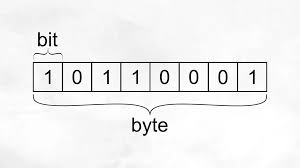
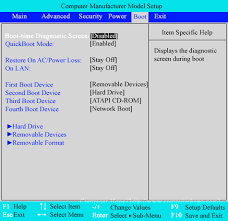

Backdoor
Método oculto para acceder a un sistema informático sin autorización, generalmente usado por hackers o programadores para mantenimiento o ataques.
Backup
Copia de seguridad de archivos y datos que permite restaurar la información en caso de pérdida, fallo del sistema o ataque cibernético.
Banner
Imagen o gráfico publicitario que aparece en páginas web, usado para marketing digital y promoción de productos o servicios.
Base de datos
Colección organizada de datos almacenados electrónicamente y administrados mediante sistemas como MySQL, Oracle o SQL Server.

Binario
Sistema numérico de base 2 que utiliza solo dos dígitos (0 y 1), fundamental en la informática y en la representación de datos en computadoras.
BIOS
Firmware que se encarga de iniciar el hardware y cargar el sistema operativo en una computadora al encenderla.
Bit
Unidad mínima de información en computación, que representa un valor binario (0 o 1).
Byte
Unidad de información compuesta por 8 bits, utilizada para representar caracteres y almacenar datos.
Browser
Navegador web, software que permite acceder e interactuar con contenido en Internet, como Google Chrome, Mozilla Firefox o Safari.
Boot
Proceso de inicio de un sistema operativo en una computadora, que incluye la carga de la BIOS, el chequeo del hardware y el arranque del software.
Buffer
Espacio de almacenamiento temporal en la memoria de una computadora que ayuda a gestionar el flujo de datos entre dispositivos o procesos.